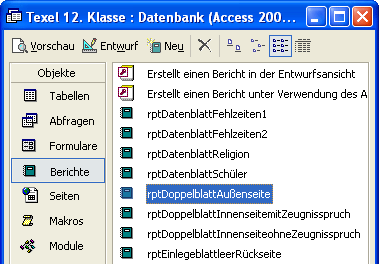
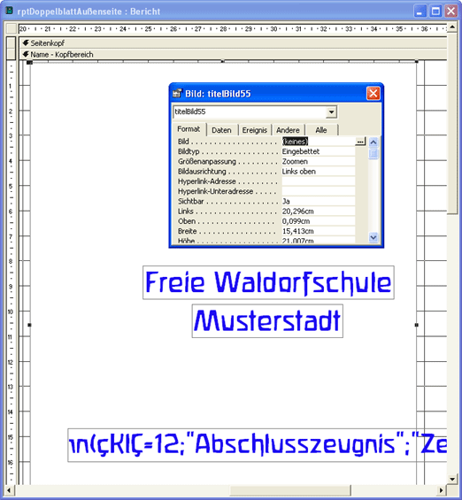

Texel-Hilfe

Einleitung
Beispiele
Überblick
Installation
Organisation
Einstellungen
Schülerdaten
Layout
Dateivorlagen
Schreiben
Einlesen
Korrigieren
Ausdrucken
Lückentexteditor
Kontakt
Eine Zeugnisverwaltung für Waldorfschulen
Installation
Die Zeugnisdatenbanken
Der Lückentexteditor
A-3 Druckertreiber
Anleitungsblätter
Schriften
Die Zeugnisdatenbanken
Das Downloadpaket enthält eine Datei mit der Zeugnisdatenbank Texel. Die Datenbank enthält nur 2 Schüler mit allen Texten für diese Schüler. Hiermit können Sie alle Funktionen ausprobieren und sich mit dem Programm vertraut machen.
Texel ist kein eigenständiges Programm. Es ist eine Anwendung für Microsoft Access 2000 oder XP. Access muss auf Ihrem Rechner installiert sein, dann ist eine Installation von Texel nicht nötig. Sie können die Dateien in einen beliebigen Ordner kopieren und durch einen Doppelklick öffnen.
Wenn Sie eine Datenbank für einen neue Klasse anlegen möchten, erstellen Sie eine Kopie einer beliebigen Texel-Datenbank.
Wenn Sie die Daten aus einer Texeldatenbank in eine anderen Datenbank übernehmen möchten, z.B. wenn Sie auf eine neue Texel-Version umstellen, können Sie alle Daten und Texte über das Formular Einstellungen importieren.
Bevor Sie Kopien für mehrere Klassen machen sollten Sie in einer Kopie alle Anpassungen für Ihre Schule vornehmen:
Geben Sie im Formular Einstellungen den Namen Ihrer Schule ein. Der erscheint dann auf allen Zeugnisausdrücken, außer auf der Vorderseite des Doppelblattes.
Das Layout dieser Zeugnisvorderseite müssen Sie von Hand anpassen. Dazu öffnen Sie den Access-Bericht (report) rptDoppelblattAußenseite über das Access-Datenbankfenster in der Entwurfsansicht.
Hier öffnen sie den Bericht rptDoppelblattAußenseite:

Geben Sie in die Textfelder den Namen Ihrer Schule ein, in das leere vorhandene Bildfeld können Sie ein Logo Ihrer Schule einfügen. Doppelklicken sie dazu auf das große Bildfeld, um das Eigenschaftenfenster zu öffnen und wählen sie unter Format-Bild eine Bilddatei aus. Am besten betten Sie das Bild in die Datenbank ein.
Hier können sie ein Logo als Bild einfügen:

Ordnen Sie die Textfelder auf der Titelseite so an, bis es Ihren Vorstellungen entspricht. Speichern Sie anschließend den Bericht. Auch den Entwurf der Zeugnisrückseite können Sie im gleichen Bericht Ihren Wünschen anpassen. Sind Sie mit Access-Berichten nicht vertraut, kann ich Sie hier nur an die Access-Hilfe oder an die Fachliteratur verweisen. Es ist aber ganz einfach. Bedenken Sie, dass Sie eine Vorschau des Berichts als A3-Blatt nur sehen, wenn der Treiber für einen A3-Drucker auf ihrem Rechner installiert ist, und dieser Drucker für diesen Bericht ausgewählt ist. Eine Anleitung dazu finden Sie auf dieser Seite.
Bei der Anpassung des Layouts der Fächer, können Sie die Lehrernamen und die Fachnamen über Auswahlfelder eingeben. Dazu müssen Sie diese Listen an Ihrer Schule anpassen. Auch bei der Eingabe der Schülerdaten, kann auch der Geburtsort aus einer Auswahlliste gewählt werden. Wählen sie dazu die entsprechenden Tabellen auf dem Formular Einstellungen.
Speichern Sie die Texel-Datei nach allen Vorbereitungen als Vorlage für alle Ihre Zeugnisdatenbanken! Jetzt können Sie davon Kopien für alle Klassen erstellen und die vorhandenen Schülerdaten löschen und neue eingeben.
Beim Schuljahreswechsel kopieren Sie alle Texel-Dateien, archivieren die fertigen Zeugnisse und erhöhen in den Kopien die Klassennummer. Die alten Texte werden dann gelöscht, die Lehrernamen in das neue Schuljahr übernommen und das neue Layout kann erstellt werden. Die mitgelieferten Beispiele enthalten noch die Layouts von Elmshorn für alle Klassen.
Wenn Sie viel mit einer Datenbank gearbeitet haben, sollten Sie den Access-Menuepunkt Extra - Datenbank Dienstprogramme - Datenbank komprimieren und reparieren aufrufen, damit die Datei nicht zu groß wird.
Der Lückentexteditor
Der Lückentexteditor Lucky ist ein eigenständiges Programm, das unabhängig von Access arbeitet. Es braucht auch nicht installiert zu werden. Sie brauchen nur die Datei Lucky.exe doppelzuklicken um das Programm zu starten. Eine Einführung finden Sie in dieser Hilfe.
A-3 Druckertreiber
Um eine Vorschau der A3-Zeugnisblätter in Access zu ermöglichen, muss der Treiber eines A3-Druckers auf Ihrem Rechner installiert sein. Der Rechner braucht dazu aber nicht angeschlossen sein. Ein Treiber für einen A3-Drucker steht auf der Texel-Internetseite zum Download bereit. Laden Sie den Treiber herunter und installieren Sie den Drucker über die Systemsteuerung - Drucker und Faxgeräte - Drucker hinzufügen - Weiter - Lokaler Drucker - Weiter - Anschluss aussuchen - Weiter - Datenträger - Durchsuchen. Suchen Sie jetzt den mitgelieferten Ordner mit den Treiberdateien bis die Datei hp2600p5.inf erscheint. Wählen Sie die Datei aus, bestätigen Sie mit OK und beenden Sie die Installation.
Um eine Vorschau der A3-Blätter zu erhalten, muss der Drucker noch beim Einrichten der Seite ausgewählt werden. Eine Anleitung hierzu finden Sie in dieser Hilfe.
Anleitungblätter
Einige Informationsblätter, die ich für die Kollegen unserer Schule geschrieben habe, sind ebenfalls als Word-Dateien beigefügt. Vielleicht können Sie sie gebrauchen.
Schriften
Das in Elmshorn benutzt Layout benutzt einige besondere Schriften. Diese sollten Sie vor der Benutzung der Beispiele über die Systemsteuerung installieren. Weitere Informationen über die Schriftarten in Texel finden Sie in dieser Hilfe.